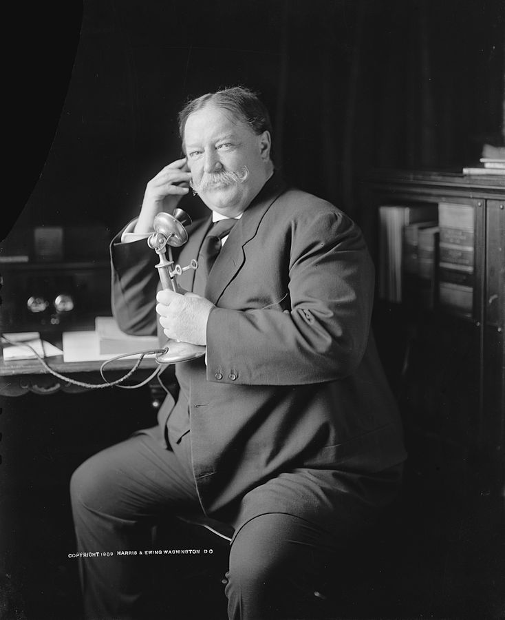

William Howard Taft
Taft was the victim of some ridicule due to his weight and reluctance to talk to the press. Given his wrestling experience and possibly bottled up rage, we can easily see him rampaging through president after president. Even some of the stronger presidents would likely be chanceless if they ended up on the floor, Roosevelt and Washington would definitely have to stay on their toes when facing the wrath of Taft.
Table of contents
Early Life
William Howard Taft was born to Alphonso Taft and Louise Torrey september 15, 1857. He was considered a hard worker as a child which got him through his studies, but more importantly, made him an excellent wrestler. In the Taft family William was a 4th generation wrestler. During his studies at Yale university he made intramural heavyweight champion.
Career in Law
In 1887 Taft was appointed to a vacancy on the Superior Court. He ruled with the confidence of a man who could wrestle and was subsequently elected to a full five-year term. During this time, his rulings and thick frame even attracted the attention of Helen Herron, with whom he remained devoted through 44 years of marriage. He would go on to serve as Federal Judge and Secretary of War until ultimately being nominated for the presidency in 1908.
Presidency
In 1909 William Taft became the thickest president of the United States of America. Being the strong silent type did not win him many favors with the media or in the public eye. Along with his impressive weight this made him prone to hefty ridicule and criticism. Taft lost the re election in 1912, making him the last American president with impressive facial hair. He stood about 6ft tall, weighing in at roughly 150kg.